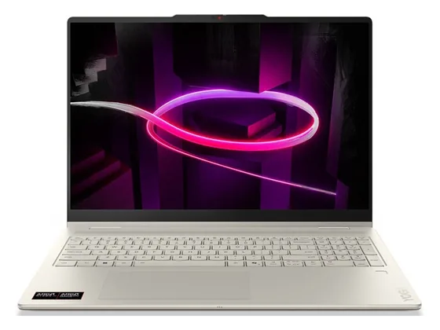

Lenovo Yoga Slim 7x : avis, tests et prix
Le verdict en une phrase. Écran OLED 3K superbe, finesse et autonomie : pour beaucoup de testeurs, le PC Snapdragon le plus abouti. Attention à la compatibilité de vos logiciels.
N° 4 sur 10 dans le top 10 PC portables polyvalent.

Pour qui ?
Vous voulez un portable fin et endurant avec l'un des plus beaux écrans OLED de la catégorie.
Vous avez des logiciels à compatibilité ARM incertaine, ou un casque filaire.
Le consensus de la presse
Sur 10 notes, 9 atteignent ou dépassent 8/10. La plus haute : 9,0/10 (TechAeris) ; la plus basse : 6,0/10 (Les Numériques). Dernier test relevé : juillet 2026.
Où l'acheter
La configuration peut différer d'un marchand à l'autre : vérifiez la fiche avant d'acheter. Seuls les liens Amazon sont affiliés à ce jour ; les autres sont de simples liens directs. Aucun n'influence les notes ni le classement.
Tous les tests recensés
Chaque ligne renvoie vers le test d'origine. Les notes sont converties sur 10 ; « test » signale un article sans note chiffrée. Notre méthode.
- TechAeris9,0
- TechAeris9,0
- Windows Central9,0
- Notebookcheck8,6
- 01net8,0
- Chip.de8,0
- Laptop Mag8,0
- TechRadar8,0
- Tom's Hardware8,0
- Les Numériques6,0
- ComputerBasetest
- Digital Trendstest
- Frandroidtest
- GameStartest
- HardwareZonetest
- PCWorldtest
- Trusted Reviewstest
- Trusted Reviewstest
- Wiredtest
Source du relevé : Synthèse CommentChoisir.
Les alternatives pour le même usage
Tout le top 10 → Asus Zenbook S 16Un 16 pouces OLED 120 Hz de 1,5 kg : grand confort d'affichage et bonnes performances dans un châssis étonnamment fin.
N° 3 · Le plus fin
Asus Zenbook S 16Un 16 pouces OLED 120 Hz de 1,5 kg : grand confort d'affichage et bonnes performances dans un châssis étonnamment fin.
N° 3 · Le plus fin
 Asus Zenbook S 14Très fin, très léger, silencieux et endurant : un ultraportable premium unanimement salué, avec un superbe écran OLED.
N° 5 · Le convertible familial
Asus Zenbook S 14Très fin, très léger, silencieux et endurant : un ultraportable premium unanimement salué, avec un superbe écran OLED.
N° 5 · Le convertible familial

Lenovo Yoga 7 2-en-1Un convertible OLED bien construit et bien noté, à l'aise pour travailler comme pour regarder un film en mode tablette.Questions fréquentes
Que pense la presse de l'ordinateur Lenovo Yoga Slim 7x ?
La note presse moyenne est de 8,2/10, calculée sur 10 notes (de 6,0 à 9,0/10). Écran OLED 3K superbe, finesse et autonomie : pour beaucoup de testeurs, le PC Snapdragon le plus abouti. Attention à la compatibilité de vos logiciels.
Quels sont les points faibles relevés par les tests ?
Compatibilité logicielle ARM à vérifier ; Pas de prise casque ; Jeu limité.
À qui s'adresse le modèle Lenovo Yoga Slim 7x ?
Vous voulez un portable fin et endurant avec l'un des plus beaux écrans OLED de la catégorie. À éviter si : vous avez des logiciels à compatibilité ARM incertaine, ou un casque filaire.
Où l'acheter, et à quel prix ?
Comptez environ 1 050 € (prix indicatif constaté en octobre 2026). Nous l'avons trouvé en vente chez Amazon et Darty. Les prix changent vite et la configuration peut différer d'un marchand à l'autre : seul le prix affiché par le marchand fait foi.